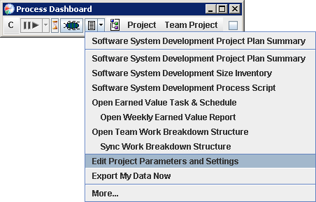

Create Individual Team Member Plans
(TSP Launch Meeting No. 6)
Once the team plan is created and balanced, you can copy the data
in this plan to create plans for each team member. For simplicity, it
is best to wait until the team is satisfied with the balanced plan
before proceeding to this step. The team leader should save the work
breakdown structure (using the Save option on the File menu of the
Work Breakdown Structure Editor), and then have each team member
perform the steps below. (If any project tasks were assigned to the
team leader, then the team leader should perform the steps below as
well.)
Before an individual can follow the instructions below, they must have
already installed the Process Dashboard and
joined the team project. If a particular
team member has not yet performed these steps, they must accomplish them
first before they can follow the steps below.
Synchronize Work Breakdown Structure
- On your personal computer, start the Process Dashboard. Use the
hierarchy menus to navigate to the team project. Then click the
down-arrow to the right of the script button, and choose Edit Project
Parameters and Settings.

- The Team Project Parameters and Settings
page will appear in your web browser. Find the text field containing
your initials. Double-check to ensure that these initials match the
ones assigned to you during the previous team-planning meeting.

If the initials do not match, you must take one of the
following corrective actions:
- Ask your team leader to change your initials in the team plan,
using the Team Member List Editor, and resave the WBS. Or
- Edit your initials in the blank provided.
- After ensuring that your initials match,
return to your main dashboard window, click the down-arrow to the
right of the script button, and choose Sync Work Breakdown
Structure. Then wait while the dashboard copies data from the team
plan.

If this is the first time you have synchronized and you see a
message, "Your hierarchy is up to date - no changes were
necessary," then your initials most likely do not match the
initials in the team plan. Return to step 1 above, and follow the
instructions carefully.
Edit Planned Schedule Time
- Return to your Process Dashboard window. From the script button
drop-down menu, choose Open Earned Value Task and Schedule. Your
personal schedule will be displayed.

The top half of this window shows a list of tasks assigned to
you. Review this list of tasks to ensure that it appears
correct.
- The bottom half of the window shows your
personal schedule. At this point, the data in this personal schedule
will most likely be incorrect. Enter the correct data for your
schedule by following these steps:
- What date do you plan to begin working
on the team project? On a calendar, lookup the date of the Sunday
immediately before that date, and enter it in the From column on the
first line of the schedule.
- In the Planned Time (PT) column on the
first line, enter the number of hours you plan to spend on
productive project work during the first (partial) week of the
project.
- In the PT column on the second line,
enter the number of hours you generally plan to spend per week on
productive project work. This number should match the value your
team leader entered for you in the Team Member List during an
earlier team-planning meeting.
- If there are weeks in the schedule that
you anticipate your available project time will differ from the time
listed (for example, because of vacation, holidays, or other work
responsibilities), find those weeks on the schedule and edit them
appropriately.
- Click the Save button to save the
changes you made to your schedule. You can then close the Task and
Schedule window if you wish.
- Return to your Process
Dashboard window. Click the down-arrow to the right of the script button,
and select the Export My Data Now option.